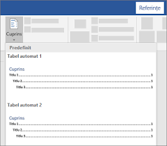

Bine ați venit într-un loc unde puteți învăța funcționalitățile de bază din Microsoft Word!
- Asigură-te că titlurile sunt setate cu stiluri (Heading 1, Heading 2 etc.).
- Mergi la „References” (Referințe).
- Alege „Table of Contents” (Cuprins) și selectează un stil.
Cuprinsul automat îți oferă o imagine de ansamblu asupra structurii documentului. Este generat pe baza stilurilor de titlu (Heading 1, 2 etc.). Poate fi actualizat automat dacă faci modificări în conținutul documentului.
